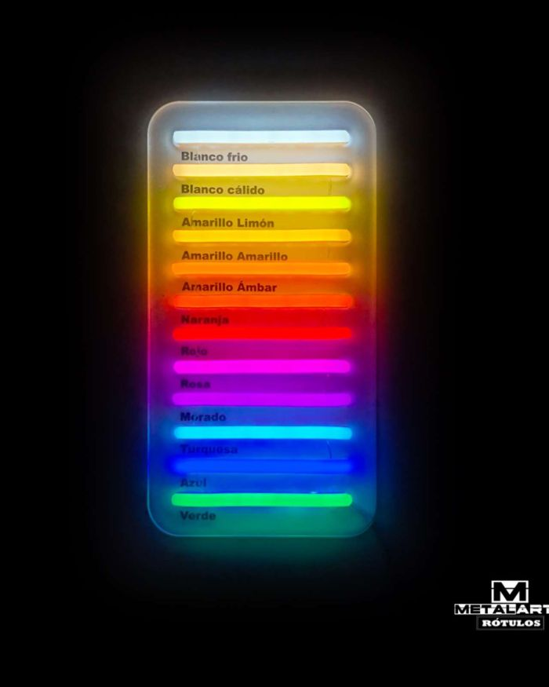
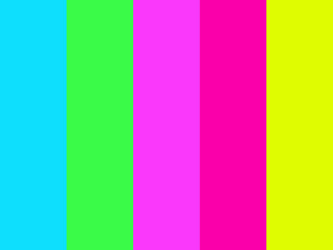
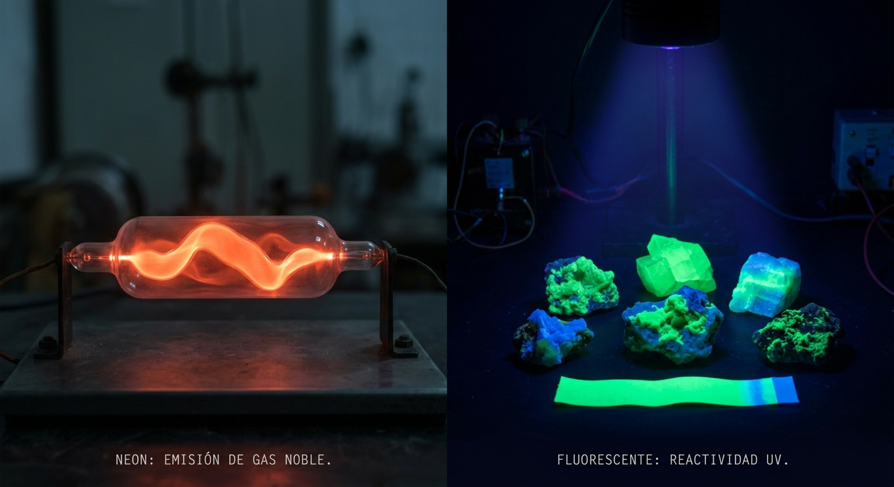

¿Qué colores son los neón?
Los colores neón (o fluorescentes) son tonos sumamente brillantes e intensos que absorben y reflejan la luz de forma especial, destacando de inmediato ante la vista


Principales colores neón
- Verde neón / Verde ácido
- Rosa magenta / Rosa eléctrico
- Amarillo neón / Amarillo limón
- Naranja neón
- Azul neón
- Morado / Púrpura neón

Datos clave
- Origen del nombre:
- Vienen de los tubos de gas neón originales, aunque el gas neón puro en realidad brilla de color rojo anaranjado. Otros gases nobles producen el resto de los colores (como el helio en rosa o el argón en azul).
- Diferencia con fluorescente:
- Se usan como sinónimos porque comparten una alta saturación visual, aunque técnicamente los colores fluorescentes reaccionan o emiten luz bajo rayos ultravioleta (UV).
